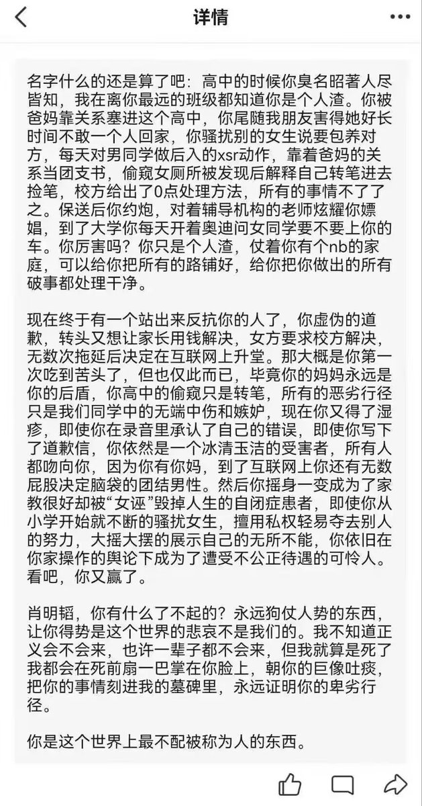

Rain_Raven🏳️🌈
@Raincandy_1937
RT @yovartija_nattv: 真的无聊，这件事情本来可以轻松“解决”的，我告诉你们怎么解决。
首先综合目前的信息来看，那个男方家庭在本地至少也是地头蛇级别的，而且以前有着很多骚扰前科，女方是完全的弱势，所以遇到这种事情选择第一时间诉诸学校，希望学校能出面。… htt…

Yö/ttevakt|sama🏴☠️🇫🇮🏴🏳️⚧️
@yovartija_nattv
真的无聊，这件事情本来可以轻松“解决”的，我告诉你们怎么解决。
首先综合目前的信息来看，那个男方家庭在本地至少也是地头蛇级别的，而且以前有着很多骚扰前科，女方是完全的弱势，所以遇到这种事情选择第一时间诉诸学校，希望学校能出面。 https://t.co/CMrqppjZXx